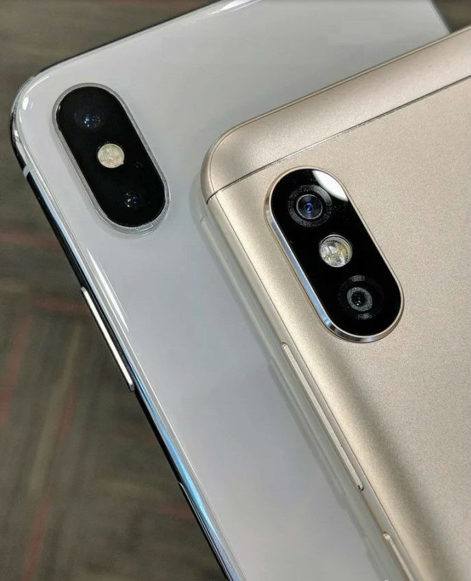
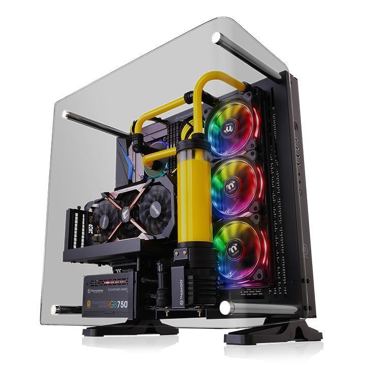

Факты про смартфоны
- 1. Более миллиарда смартфонов было выпущено в 2016-ом году, а за первое полугодие 2017 года выпущено более 647 миллионов штук аппаратов.
- 2. Самыми дорогими элементами смартфона считаются экран и память.
- 3. Каждый 10-ый пользователь смартфона, даже занимаясь любовью, не выпускает из рук это устройство.
- 4. В Южной Корее была придумана «болезнь» от смартфона – цифровое слабоумие. Было доказано, что если увлекаться использованием смартфона, то у человека теряется способность сосредоточиться.
- 5. Более 20 миллиардов приложений ежегодно загружается на смартфоны.
- 6. На сегодняшний день смартфонов насчитывается больше, нежели туалетов в Индии.
- 7. Фины создали новый вид спорта – метание смартфонов. Это связано с тем, что они устали бороться с зависимостью от современных гаджетов.
- 8. Японцы пользуются смартфоном даже во время принятия душа.
- 9. У канцлера Германии Ангелы Меркель есть 2 смартфона.
- 10. В основе каждого смартфона лежит операционная система.

Факты про консоли
- 1.Первым фактом является новый интерфейс, который пришёл на смену XMB, использовавшемуся в PS3. Новый ГИП сочетает в себе все социальные функции консоли, такие как общение, возможность поделиться видео, загрузить игру в фоне и т.д.
- 2.Ёмкость жёсткого диска PS4 составляет 500 ГБ, и при желании он может быть заменён.
- 3.Игроки смогут войти в свой аккаунт на абсолютно любой PS4, а не только на той, которую приобрели сами.
- 4.Вы можете задать, какая консоль будет являться основной базой для Вашего аккаунта PlayStation Plus. Таким образом, вы сможете предоставлять доступ к своему контенту друзьям.
- 5.Каждая PS4 будет комплектоваться кабелем HDMI.
- 6.PS4 не будет иметь региональной привязки.
- 7.Камера PlayStation 4 Eye может снимать в 3D и помогать моделировать дополненную реальность в играх.
- 8.Камера PlayStation 4 Eye оснащена четырьмя микрофонами для точного отслеживания источника звука.
- 9.Сервис Video Unlimited позволит впервые за всю историю PlayStation транслировать фильмы в реальном времени.
- 10.Пользователь сможет переключаться между игрой, просмотром фильма и прочими нужными ему функциями практически моментально и в любое время.
Факты про компьютеры
- 1. Компания ІВМ создала три самых производительных компьютера в мире, а возглавляет этот список IBM BlueGene/L с максимальная производительность которого составляет 367 Террафлоп
- 2. "Грязная дюжина" – так было кодовое название группы из 12 разработчиков IBM PC.
- 3. Первый мобильный робот,который имел систему искусственного интеллекта, был создан компанией SRI в 1970 году и имел название Shakey.
- 4. Когда впервые изобрели CD, разработчики пытались определить какой же объем для него нужен и решили, что CD диск должен быть таким, чтобы вместилась Девятая Симфония Бетховена, которую можно проигрывать в любом темпе. А это занимает примерно 72 минуты.
- 5. Первый портативный компьютер был создан в 1981 году. Его вес составлял около 12 килограмм, имел монитор в 5 дюймов, два 5-дюймовых дисковода, 64 кб ОЗУ и стоил 1,795$.
- 6. Самый первый жесткий диск, который используется в компьютерах Apple, имел объем 5 Мегабайт.
- 7. Пингвина, который стал символом OS Linux, зовут Tux.
- 8. В 1982 году журнал Time назвал "человеком года" - компьютер.
- 9. Киберфобия – это страх перед компьютерами или работой за компьютером.
- 10. Трое из 6 самых богатых людей в мире заработали свое состояние, работая в IT-сфере.
